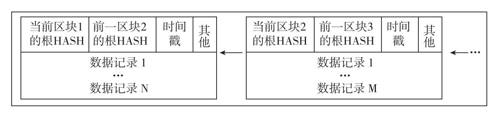
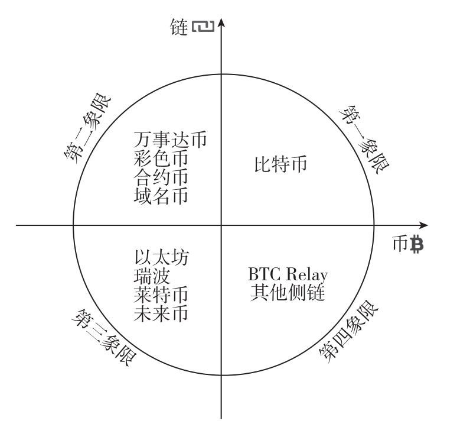
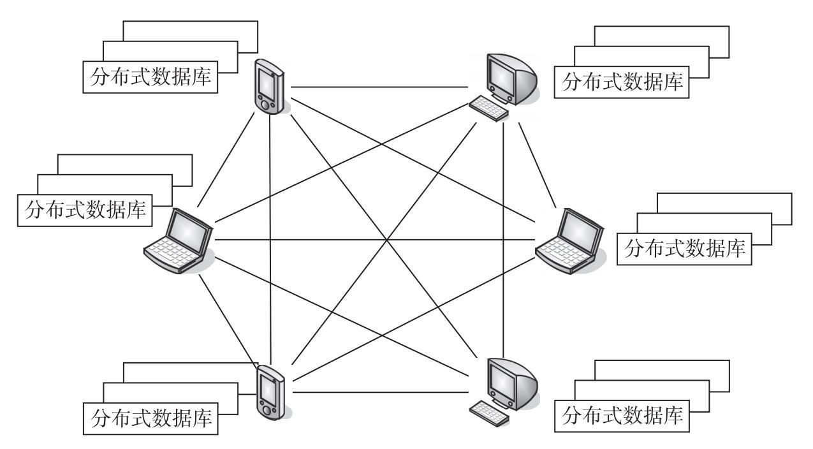
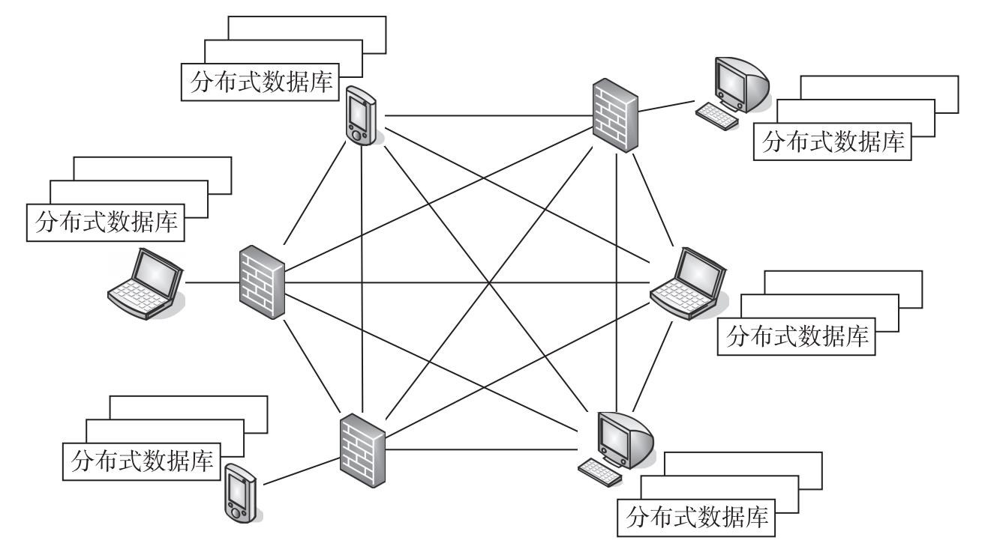
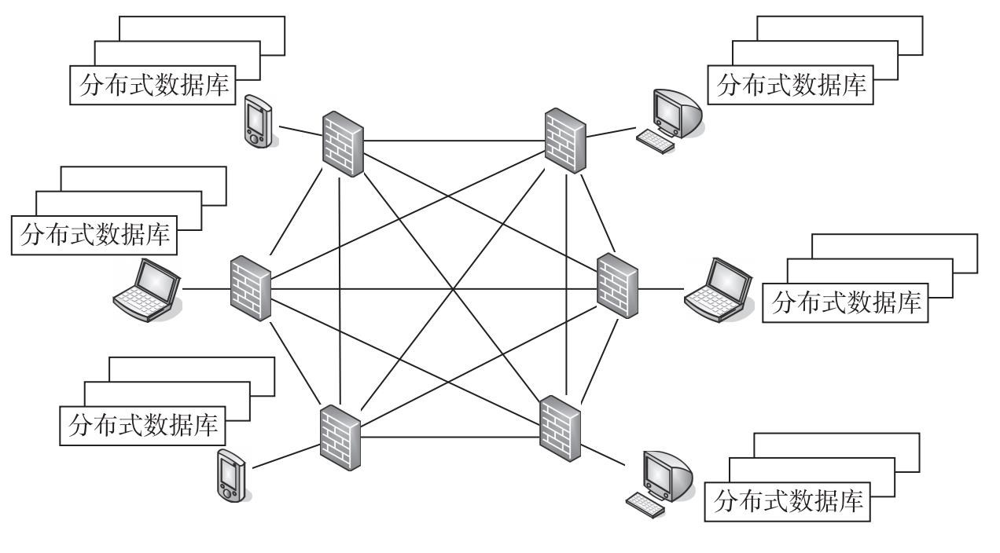
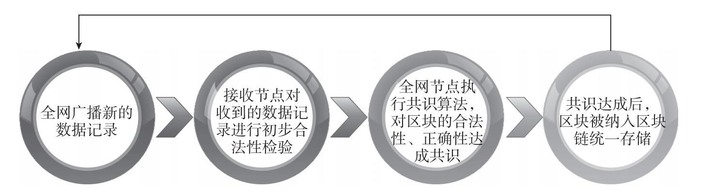
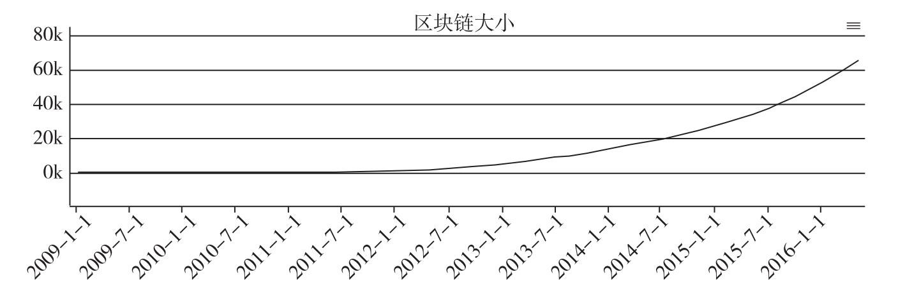
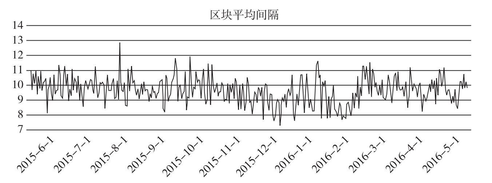
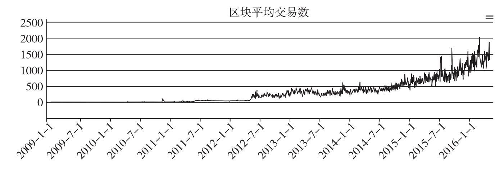

区块链1-基础概念
一、区块链的基本概念
区块链（Blockchain）技术的产生和发展离不开比特币。首先，因为随着比特币的诞生，区块链技术才得以公布于众；其次，比特币是截至目前区块链技术最成功、最成熟的应用案例。比特币的概念由中本聪在2008年发表的论文《比特币：一种点对点的电子现金系统》中首次提出。文中，中本聪将区块链技术作为构建比特币数据结构及交易体系的基础技术，将比特币打造为一种数字货币和在线支付系统，利用加密技术实现资金转移，而不再依赖于中央银行。比特币使用公钥地址发送和接收比特币，并进行交易记录，从而实现个人身份信息的匿名。交易确认的过程则需要用户贡献算力，共同对交易进行共识确认，从而将交易记录到全网公开账本中。用户可以利用电脑、手机等发送或接收比特币，并选择交易费用。现有逾百种加密数字货币（未来币、点点币、莱特币、狗狗币等），比特币约占所有加密数字货币市值的90%。
比特币的区块链毕竟是为比特币体系的设计而定制，因此比特币的区块链技术并不等于区块链技术。区块链技术应该是可以有更多种形态、更多种体系、更多种用途、更多种规格的技术，其概念为：区块链是一个去中心化的分布式数据库，该数据库由一串使用密码学方法产生的数据区块有序链接而成，区块中包含有一定时间内产生的无法被篡改的数据记录信息。
区块中包含数据记录、当前区块根哈希（Hash）、前一区块根哈希、时间戳以及其他信息（图1）。数据记录的类型可以根据场景决定，比如资产交易记录、资产发行记录、清算记录、智能合约记录甚至物联网数据记录等。数据记录在存储过程中，通常组织为树形式，比如默克尔树，而区块根哈希实际就是数据记录树的根节点哈希，为根据数据记录树自下而上逐步通过SHA-256等哈希算法计算得出。时间戳为区块的生成时间。其他信息包括区块签名信息、随机值等信息，也可根据具体应用场景灵活定义。

图1 区块链结构示意图
区块链技术不是一种单一的技术，而是多种技术整合的结果，包括密码学、数学、经济学、网络科学等。这些技术以特定方式组合在一起，形成了一种新的去中心化数据记录与存储体系，并给存储数据的区块打上时间戳使其形成一个连续的、前后关联的诚实数据记录存储结构，最终目的是建立一个保证诚实的数据系统，可将其称为能够保证系统诚实的分布式数据库。在这个系统中，只有系统本身是值得信任的，所以数据记录、存储与更新规则是为建立人们对区块链系统的信任而设计。诚实意味着系统可以被信任，正是商业活动和应用推广的前提，所以区块链技术已经被很多领域主流机构看中并非是没有理由的。因为有了区块链技术，在一个诚信的系统里，可以省去许多烦琐的审查手续，许多因数据缺乏透明度而无法开展的业务可以开展，甚至社会的自动化程度也将大幅提升。
近年来，包括高盛、摩根大通和纳斯达克等金融机构开始展开对区块链技术的重点研究。这些机构的金融业务大都具有标准化程度高、连续性强、自动化需求大、业务对信用度要求高等特点，跟区块链的优势高度契合。同时，在供应链金融中，由于物流、资金流和信息流的复杂安排会涉及众多单据，因此使用电子商务平台记账会大大节省纸质单据所需要的时间和成本，然而使用谁的电子商务平台就成为一个大问题。如果使用利益相关各方自建的电子商务平台，数据的真实性就很容易受到质疑，而自建电子商务平台往往耗资不菲；如果使用第三方的电子商务平台，第三方的经营稳定性和信息安全性又难以保证，比如因财务、政策、网络攻击等各种情况引起不稳定问题等，沟通协调成本和风险也会大幅增加。区块链技术的安全性、不可逆、不可篡改性和透明性都已经得到了证明，如果能把供应链金融业务直接建立在这样已被证明其可靠性的区块链上，将极大地降低安全和信用成本。所以，尽管目前电子商务平台的使用已经大大节约了成本，但如果能有一个具有公信力的类似区块链公共信用系统，成本仍有进一步节约的空间。从政府层面来说，这一点也很重要，因为提供值得大众信任的系统本身就是政府职能的一部分。中国的资本运用效率远低于美国的一个非常重要的原因就是社会的信用体系不健全、信息不透明、部门协调成本过高，且利益保护现象严重。如果能从技术上应用区块链，就可以用较低的成本打破这些阻碍，建立一个公开的社会公共信用系统，整个社会成本都将大幅降低，效率也将大幅提升，还便于监管。透明的数据不仅将大大降低监管部门的工作量（很大一部分工作量转移给了社会监督，任何异动都很难逃过众人的眼睛），而且使得监管部门的主要工作转向治理，提升治理人性化和效率。
尽管使用区块链技术所建立的系统本身是诚实可信的，但这并不意味着来自系统以外的输入信息就是诚实的，更多的时候只是意味着区块链诚实记录并储存了这些外部数据。比如认证，认证工作往往是在线下完成，即使区块链能够存储文字、图片甚至多媒体信息，也并不意味着那些信息都是真实的。这只意味着区块链真实记录并存储了这些信息，防止被篡改，如果发生业务纠纷时可以作为凭证。可能许多人没有注意到这一点，自动化是区块链技术的一个非常重要的特性，区块链网络实际上就是一个接近于自动化或存在完全自动化可能性的网络。这一点之所以重要，一方面，是因为自动化是金融机构青睐区块链技术的重要原因，金融交易需要网络能够自动记录和存储交易数据，也能够允许参与者通过设置条件在网络上自动进行和完成交易；另一方面，区块链技术在这方面提供的可能性为社会生产效率的大幅提升留下了广阔的空间，也为智能合约等一系列高级应用留下了充足的余地。在理想情况下，区块链技术最终能够同物联网结合起来。
总体而言，区块链的发展体系可以划分为四个象限（图2）。第一象限是比特币区块链；
第二象限是使用比特币区块链协议，但不使用比特币货币的系统，比如万事达币、彩色币、合约币，以及采用合并挖矿的域名币等；第三象限是同时使用独立货币和独立区块链的系统，比如以太坊、瑞波、莱特币和未来币等；第四象限是侧链，采用独立的网络但以比特币作为底层货币的系统，如BTC Relay等。

图2 区块链发展体系四象限
（一）区块链的分类
目前已知的区块链技术应用大致分为三类。
公共区块链（Public Blockchain）
是指全世界任何人都可读取、可发送交易进行有效性确认，任何人都能参与其共识过程的区块链（共识过程是维持区块链这种分布式数据库一致性、准确性的关键技术，将在后续章节详细介绍），如图3所示。区块链上的数据记录公开，所有人都可以访问，都可以发出交易请求，并通过验证被写入区块链。共识过程的参与者通过密码学技术共同维护公共区块链数据的安全、透明、不可篡改。公共区块链的典型应用包括比特币、以太坊等。

公共区块链是完全分布式的区块链，区块链数据公开，用户参与程度高，同时易于产生网络效应，便于应用推广。然而，系统的运行需要依赖于内建的激励机制。公共区块链上试图保存的数据越有价值，越要审视其安全性以及安全性带来的交易成本、系统可扩展性问题。
共同体区块链（Consortium Blockchains）
又称联盟链，是指参与区块链的节点是事先选择好的，节点间通常有良好的网络连接等合作关系，区块链上的数据可以是公开的也可以是内部的，为部分意义上的分布式，可视为“部分去中心化”。如图4所示为共同体区块链示意图。比如有若干家金融机构之间建立了某个共同体区块链，每个机构都运行着一个节点，而且为了使每个区块生效需要获得至少其中10个机构的确认。区块链可以允许每个机构可读取，或者只受限于共识验证参与者，或走混合型路线，例如区块的根哈希及应用程序接口对外公开，允许外界用来进行区块链数据和区块链状态信息查询等。其典型应用包括超级账本（Hyperledger）、区块链联盟R3CEV等。

共同体区块链的参与节点间的连接状态较好、验证效率较高，只需较低的成本即可维持运行，提供高速交易处理的同时降低交易费用，有很好的扩展性，数据可以保持一定的隐私性。但是这也意味着在共识达成的前提下，参与节点可以一起篡改数据。
私有区块链（Private Blockchain）
参与的节点只有有限的范围，比如特定机构的自身用户等，数据的访问及使用有严格的权限管理，如图5所示为私有区块链示意图。完全私有的区块链中写入权限仅在参与者手里，读取权限可以对外开放，也可以进行任意程度的限制。相关的应用囊括数据库管理、数据库审计甚至公司管理，尽管在有些情况下希望私有区块链可以具有公共的可审计性，但在更多的情况下，没有公共的可读性。由于是私有用户说了算，里面的数据没有无法篡改的特性，对于第三方的保障力度大大降低。因此，目前很多私有区块链会通过依附在比特币等已有区块链的方式存在，定期将系统快照数据记录到比特币等系统中。其典型应用如Eris Industries。
私有区块链可以带来规则的改变。如果需要的话，运行着私有区块链的机构可以很容易地修改区块链的规则、回滚交易。这一点似乎略有违背区块链的本质，但是却适用于一些特殊场景需求。由于私有区块链验证者是内部公开的，所以并不存在部分验证节点共谋进行51%攻击的风险。私有区块链交易成本更低。交易只需被几个受信的高算力节点验证即可，而不是需要数万个节点的确认，因此交易成本会低。但从长远来看，随着区块链技术的进步，公共区块链的成本将可能降低1~2个数量级，大致与高效的私有区块链系统类似。私有区块链节点间连接情况好、故障可以迅速通过人工干预来修复，从而提升交易速度并可以更好地保护隐私。

公共区块链、共同体区块链和私有区块链各有优势。公共区块链很难实现得很完美，共同体区块链、私有区块链需要找到实际迫切需求的应用需求和场景。至于具体选择哪套方案取决于具体需求，有时使用公共区块链会更好，但有时又需要一定的私有控制，适用于使用共同体区块链或私有区块链。
（二）区块链的特征
- 去中心化
去中心化是区块链最基本的特征，意味着区块链不再依赖于中央处理节点，实现了数据的分布式记录、存储和更新。由于使用分布式存储和算力，不存在中心化的硬件或管理机构，全网节点的权利和义务均等，系统中的数据本质是由全网节点共同维护的。由于每个区块链节点都必须遵循同一规则，而该规则基于密码算法而非信用，同时每次数据更新需要网络内其他用户的批准，所以不需要一套第三方中介结构或信任机构背书。在传统的中心化网络中，对一个中心节点实行攻击即可破坏整个系统，而在一个去中心化的区块链网络中，攻击单个节点无法控制或破坏整个网络，掌握网内超过51%的节点只是获得控制权的开始而已。 - 透明性
区块链系统的数据记录对全网节点是透明的，数据记录的更新操作对全网节点也是透明的，这是区块链系统值得信任的基础。由于区块链系统使用开源的程序、开放的规则和高参与度，区块链数据记录和运行规则可以被全网节点审查、追溯，具有很高的透明度。 - 开放性
区块链系统是开放的，除了数据直接相关各方的私有信息被加密外，区块链的数据对所有人公开（具有特殊权限要求的区块链系统除外）。任何人或参与节点都可以通过公开的接口查询区块链数据记录或者开发相关应用，因此整个系统信息高度透明。 - 自治性
区块链采用基于协商一致的规范和协议，使整个系统中的所有节点能够在去信任的环境自由安全地交换数据、记录数据、更新数据，把对个人或机构的信任改成对体系的信任，任何人为的干预都将不起作用。 - 信息不可篡改
区块链系统的信息一旦经过验证并添加至区块链后，就会得到永久存储，无法更改（具备特殊更改需求的私有区块链等系统除外）。除非能够同时控制系统中超过51%的节点，否则单个节点上对数据库的修改是无效的，因此区块链的数据稳定性和可靠性极高。 - 匿名性
区块链技术解决了节点间信任的问题，因此数据交换甚至交易均可在匿名的情况下进行。由于节点之间的数据交换遵循固定且预知的算法，因而其数据交互是无须信任的，可以基于地址而非个人身份进行，因此交易双方无须通过公开身份的方式让对方产生信任。
二、区块链的工作原理
（一）拜占庭将军问题
拜占庭将军问题是容错计算中的一个老问题，由莱斯利·兰伯特（Leslie Lamport）等人在1982年提出。拜占庭帝国是5～15世纪的东罗马帝国，即现在的土耳其。拜占庭城邦拥有巨大的财富，使它的十个邻邦垂涎已久。但是拜占庭高墙耸立，固若金汤，没有一个单独的邻邦能够成功入侵。任何单个城邦的入侵行动都会失败，而入侵者的军队也会被歼灭，使其自身反而容易遭到其他九个城邦的入侵。这十个邻邦之间也互相觊觎对方的财富并经常爆发战争。拜占庭的防御能力如此之强，十个邻邦中的至少一半同时进攻，才能攻破。也就是说，如果六个或者更多的邻邦一起进攻，就会成功并获得拜占庭的财富。然而，如果其中有一个或者更多邻邦发生背叛，答应一起入侵但在其他人进攻的时候又不干了，会导致只有五支或者更少的军队在同时进攻，那么所有的进攻军队都会被歼灭，并随后被其他邻邦所劫掠。因此，这是一个由不互相信任的各个邻邦构成的分布式网络，每一方都小心行事，因为稍有不慎，就会给自己带来灾难。为了获取拜占庭的巨额财富，这些邻邦分散在拜占庭的周围，依靠士兵相互通信来协商进攻目标及进攻时间。这些邻邦将军想要攻克拜占庭，都面临着一个困扰，也就是拜占庭将军问题。
邻邦将军不确定他们中是否有叛徒，叛徒可能擅自变更进攻意向或者进攻时间。在这种状态下，将军们能否找到一种分布式协议进行远程协商，进而赢取拜占庭城堡攻克战役的胜利呢？这就是拜占庭将军问题。
针对拜占庭将军问题的解决方法包括：口头协议算法、书面协议算法等。口头协议算法的核心思想如下：要求每个被发送的消息都能被正确投递，信息接收者知道消息的发送者身份，知道缺少的消息信息。采用口头协议算法，若叛徒数少于1/3，则拜占庭将军问题可解。也就是说，若叛徒数为m，当将军总数n至少为3m+1时，问题可解。然而，口头协议算法存在明显的缺点，那就是消息不能追根溯源。为解决该问题，提出了书面协议算法。该算法要求签名不可伪造，一旦被篡改即可发现，同时任何人都可以验证签名的可靠性。书面协议算法也不能完全解决拜占庭将军问题。因为该算法没有考虑信息传输时延、其签名体系难以实现且签名消息记录的保存难以摆脱中心化机构。
与已有方法相比，区块链技术将是更完美的解决方案。区块链是怎样来解决这个问题的呢？它为发送信息加入了成本，降低了信息传递的速率，并加入了一个随机数以保证在一段时间内只有一个矿工可以进行传播。它加入的成本就是“工作量”，区块链矿工必须完成一个随机哈希算法的计算工作量才能向各城邦传播消息。
当用户向网络输入一笔交易的时候，他们使用内嵌在客户端的标准公钥加密工具为这笔交易签名，这好比拜占庭将军问题中他们用来签名和验证消息时使用的“印章”。因此，哈希计算速率的限制，加上公钥加密，使一个不可信网络变成了一个可信的网络，使所有参与者可以在某些事情上达成一致。拜占庭将军问题的区块链解决方案可以推广到任何在分布式网络上缺乏信任的领域，比如说域名、投票选举或其他需要分布式协议的地方。
（二）区块链工作流程
区块链的工作流程主要包括如下步骤（图6）。
- 发送节点将新的数据记录向全网进行广播。
- 接收节点对收到的数据记录信息进行检验，比如记录信息是否合法，通过检验后，数据记录将被纳入一个区块中。
- 全网所有接收节点对区块执行共识算法（工作量证明、权益证明等）。
- 区块通过共识算法过程后被正式纳入区块链中存储，全网节点均表示接受该区块，而表示接受的方法，就是将该区块的随机散列值视为最新的区块散列值，新区块的制造将以该区块链为基础进行延长。

图6 区块链的工作流程
节点始终都将最长的区块链视为正确的链，并持续以此为基础验证和延长它。如果有两个节点同时广播不同版本的新区块，那么其他节点在接收到该区块的时间上将存在先后差别，它们将在先收到的区块基础上进行工作，但也会保留另外一个链条，以防后者变成长的链条。该僵局的打破需要共识算法的进一步运行，当其中的一条链条被证实为是较长的一条，那么在另一条分支链条上工作的节点将转换阵营，开始在较长的链条上工作。以上就是防止区块链分叉的整个过程。
所谓“新的数据记录广播”，实际上不需要抵达全部的节点。只要数据记录信息能够抵达足够多的节点，那么将很快地被整合进一个区块中。而区块的广播对被丢弃的信息是具有容错能力的。如果一个节点没有收到某特定区块，那么该节点将会发现自己缺失了某个区块，也就可以提出自己下载该区块的请求。
现在我们都知道了区块链网络里的记账者是节点，节点负责把数据记录记到数据区块里，为了鼓励节点记账，系统会按照规则随机地对记账的节点进行奖励。那么如何保证不会有人制造假数据记录或者说如何保证造假数据记录不被通过验证？这就涉及时间戳。这也正是区块链与众不同的地方。区块链不仅关注数据区块里的内容，也关注数据区块本身，把数据区块的内容与数据区块本身通过时间戳联系起来。时间戳为什么会出现？这是由区块链的性质规定的。节点把数据记入了区块，因此一个区块就相当于一页账簿，每笔数据在账簿中的记录可以自动按时间先后排列，那么账簿的页与页怎么衔接起来？也就是说，这一个区块与下一个区块的继承关系如何断定就成为问题。于是时间戳就出现了。
时间戳的重要意义在于其使数据区块形成了新的结构。这个新的结构使各个区块通过时间线有序连接起来，形成了一个区块的链条，因此才称为区块链。区块按时间的先后顺序排列使账簿的页与页的记录也具有了连续性。通过给数据记录印上时间标签，使每一条数据记录都具有唯一性，从而使数据记录本身在区块和区块上的哪个位置上发生可以被精确定位且可回溯，也给其他的校验机制协同发挥作用提供了极大的便利和确定性，使整个区块链网络能够确定性地验证某条数据记录是否真实。由于区块链网络是公开的，意味着系统知道过去发生的所有数据记录，而任何新的数据记录都继承于过去的数据记录，因为过去的数据记录是真实的，而且链条的各个区块记录由时间戳连接起来使之环环相扣，所以如果想要制造一个假的数据记录，就必须在区块链上修改过去的所有数据记录。尽管在挖矿的过程中，形成了多个链条，但因为最长的那个被诚实的节点所控制，所以想要修改过去的数据记录，首先就要从头构造出一个长度比之前最长的那个还要长的链条，在这个新的链条超过原来的那个链条后，才能制造双重支付的虚假数据。然而随着时间推移，制造新链条的难度和成本都是呈指数级上升的，而且随着链条越来越长，其难度也变得越来越大，成本也就越来越高。同时，因为去中心化的设置，区块链的各个核心客户端同时又是服务器，保存了区块链网络的完整数据，因此使对区块链网络的攻击很难像对传统的中央处理节点那样有效，一般情况下很难对区块链网络构成重大冲击。最终，区块链网络成为一个难以攻破的、公开的、不可篡改数据记录和制造虚假数据的诚实可信系统。
区块链保证数据安全、不可篡改以及透明性的关键技术包括两个方面：一是数据加密签名机制；二是共识算法。在数据加密签名机制中，首先，要有一个私钥，私钥是证明个人所有权的关键，比如证明某人有权从一个特定的钱包消费数字货币，是通过数字签名来实现的。其次，要使用哈希（Hash）算法。哈希散列是密码学里的经典技术，把任意长度的输入通过哈希算法计算，变换成固定长度的由字母和数字组成的输出，具有不可逆性。共识算法是区块链中节点保持区块数据一致、准确的基础，现有的主流共识算法包括工作量证明（PoW）、权益证明（PoS）、瑞波共识协议（RCP）等。以PoW为例，是指通过消耗节点算力形成新的区块，是节点利用自身的计算机硬件为网络做数学计算进行交易确认和提高安全性的过程。交易支持者（矿工）在电脑上运行比特币软件不断计算软件提供的复杂的密码学问题来保证交易的进行。作为对他们服务的奖励，矿工可以得到他们所确认的交易中包含的手续费，以及新产生的比特币。
三、区块链共识机制
区块链要成为一个难以攻破的、公开的、不可篡改数据记录的去中心化诚实可信系统，需要在尽可能短的时间内做到分布式数据记录的安全、明确及不可逆，提供一个最坚实且去中心化的系统。在实践中，该流程分为两个方面：一是选择一个独特的节点来产生一个区块；二是使分布式数据记录不可逆。实现上述流程的技术核心就是：共识机制。共识机制是区块链节点就区块信息达成全网一致共识的机制，可以保证最新区块被准确添加至区块链、节点存储的区块链信息一致不分叉甚至可以抵御恶意攻击。
当前主流的共识机制包括：工作量证明、权益证明、工作量证明与权益证明混合（PoS+PoW）、股份授权证明、瑞波共识协议等。
（一）工作量证明
工作量证明（Proof of Work）,顾名思义，即指工作量的证明。PoW机制的基本步骤如下：
- 节点监听全网数据记录，通过基本合法性验证的数据记录将进行暂存；
- 节点消耗自身算力尝试不同的随机数，进行指定哈希计算，并不断重复该过程直至找到合理的随机数；
- 找到合理的随机数后，生成区块信息，首先输入区块头信息，然后是数据记录信息；
- 接单对外部广播出新产生的区块，其他节点验证通过后，连接至区块链中，主链高度加一，然后所有节点切换至新区块后面继续进行工作量证明和区块生产。
PoW叫工作量证明体现在步骤②中，节点需要不断消耗算力工作，进行哈希计算，以找到期望的随机数。以比特币区块链为例，通过PoW机制维护区块链的整体运行及其安全性。验证节点通过随机的散列运算，争夺比特币区块链的记账权，防止欺诈交易，避免“双重支付”，这一过程需要消耗电力、算力来完成。因此，验证节点也成为“矿工”，随机数计算查找过程称为“挖矿”。每一个比特币区块链中的区块都包含着一个由无意义数据构成的短字符串（称为随机数），找到一个合适的随机数唯一已知的方法是不停地随机试探直到搜索到一个有效的数。比特币的PoW中，平均每10分钟有一个节点找到一个区块。如果两个节点在同一个时间找到区块，那么网络将根据后续节点和区块生成情况来确定哪个区块构建最终区块链。一般情况下，需要6个区块的生成时间进行确认，因为一般交易在6个区块（约1个小时）后被认为是安全确认且不可逆的。其工作量主要体现在：一个符合要求的区块随机数由N个前导零构成，零的个数取决于网络的难度值。要得到合理的随机数需要经过大量尝试计算，计算时间取决于机器的哈希运算速度。当某个节点提供出一个合理的随机数值，说明该节点确实经过了大量的尝试计算。当然，这并不能得出计算次数的绝对值，因为寻找合理随机数值是一个概率事件。工作量证明机制看似很神秘，其实在社会中的应用非常广泛。例如，毕业证、学位证、律师证等证书就是工作证明，拥有证书即表明在过去付出了努力。挖矿为整个系统的运转提供原动力，挖矿有三个重要功能：一是发行新的货币；二是维系系统的支付功能；三是通过算力保障系统安全。首先，挖矿消耗资源将黄金注入流通经济，比特币通过“挖矿”完成相同的事情，只不过消耗的是CPU时间与电力。其次，挖矿用于产量调节，区块的产量为大约每两周2016个，即每10分钟一块。第三，通过算力保障系统安全。算力攻击的概率难度呈指数上升（泊松分布），每个区块都必须指向前一个区块，否则无法验证通过。追根溯源便是高度为零的创世区块。PoW机制存在两方面明显的缺陷。一是算力的消耗与浪费。在PoW中，尽管区块链节点是用来帮区块链进行分布式数据记录的，但是它们实际所做的大部分工作是寻找正确的随机数而与数据记录无关。用来寻找随机数的能量和资源将永远地消失，这显然是一种浪费。二是算力集中化凸显。PoW机制自然地导致了算力集中问题。由于作为一个普通的个体或者几十、几百台规模的矿机目前都很难挖到区块了，因此大家必须联合起来挖矿，就诞生了算力集中的地方——矿池。其中最著名的是比特币Ghash矿池，它因为数次接近甚至达到了50%比特币的算力，从而引起了比特币社区的广泛担忧。
（二）权益证明+工作量证明
2012年8月，一个化名Sunny King的极客推出了Peercoin（PPC），采用工作量证明机制PoW发行新币，采用权益证明机制PoS维护网络安全，即PoW+PoS机制。该机制中，区块被分成两种形式——PoW区块及PoS区块。在这种新型区块链体系里，区块持有人可以消耗他的币天获得利息，同时获得为网络产生一个区块和用PoS造币的优先权。PoS的第一次输入被称为权益核心，需要符合某一哈希目标协议。因此，PoS区块的产生具有随机性，其过程与PoW相似。但有一个重要的区别在于，PoS随机散列运算是在一个有限制的空间里完成的，而不是PoW那样在无限制的空间里寻找，因此无须大量的能源消耗。权益核心所要符合的随机散列目标是以在核心中消耗的币天的目标值（币×天），这与PoW是不同的，PoW的每个节点都具有相同的目标值。因此，核心消耗的币天越多，就越容易符合目标协议。PoS中还有一种新型的造币过程。PoS区块将根据所消耗的币天产生利息币，设计时设定了每币一年将产生1分利息，以避免将来的通胀。在造币初期时保留了PoW，使最初的造币更加方便。
在区块链中谁是主链的问题是解决分叉的关键。PoS判断主链的标准已经转化为对消耗币天的判断。每个区块的交易都会将其消耗的币天提交给该区块，以提高该区块的得分。获得最高消耗币天的区块将被选中为主链。此设计减少了部分对于51%攻击的忧虑，因为在PoS区块中，要进行51%攻击，首先，要控制数量众多的币天，成本可能要高于获得51%的算力，这样就提高了攻击的成本；其次，攻击者在攻击网络时，其币天也会消耗，这将使攻击者阻止交易进入主链的行为变得更加困难。
为抵御分布式拒绝服务攻击，在PoW+PoS机制中，每个区块都必须由其拥有者签名，以避免受到复制并被攻击者使用。为了抵御攻击者复制产生多个区块进行分布式拒绝服务攻击，每个节点都会收集其接触到的（核心，时间戳）配对信息。假如一个已接收到的区块包含与其他之前收到的区块中的配对信息（核心，时间戳）是重复的，会忽略此区块直到后者被孤立出去。
在PoW+POS机制下，只要持有币的人，不论持有的数量多少，都可以挖到数据块，而不用采用任何的矿池导致算力集中。同时，由于多采用币天生成区块，而不是算力，降低了资源消耗，解决了单纯PoW机制在维护网络安全方面先天不足的问题。
（三）权益证明
除了结合PoW使用外，能否单独利用PoS机制进行区块链系统设计运行呢？答案是肯定的。简单来说，PoS就是一个根据持有货币的量和时间，进行利息发放和区块产生的机制。在权益证明PoS模式下，有一个名词叫币天。例如，每个币每天产生1币天，比如持有100个币，总共持有了30天，那么此时币天就为3000。这个时候，如果发现了一个新PoS区块，币天就会被清空为0。每被清空365币天，将会从区块中获得0.05个币的利息（可理解为年利率5%）。
PoS的典型应用就是未来币。同其他加密货币一样，未来币体系的总账是建立和储存在一系列区块里的，也就是区块链中。每个区块链的备份都存放在未来币网络的每个节点里，而且在每个节点上没有加密的每个账户都能够生成区块，只要至少一个新入账户的交易已经确认了1440次。任何账户只要达到了这个标准就会被视为“激活账户”。在未来币里，每个区块都包含着255个交易，每个交易都是由包含识别参数的192字节的数据头开始的。一个区块里的每个交易量都是由128个字节所代表着。总共加在一起就意味着最大的区块大小有32K字节。每个区块都有一个“生成签名”的参数。激活账户用自己的私钥在原先的区块上签署“生成签名”。这就产生了一个64字节的签名，之后通过SHA256散列该签名。哈希产生的前八个字节给出了一个数字，作为一个“hit”。“hit”与目前的目标值相比较，如果计算出的“hit”值要比“目标值”低，那么就可以生成下一个区块了。对于每个活动账户来讲，“目标值”都是与它自身所确认的余额成比例的。一个持有1000个币的账户得到的目标值是持有20个币账户所得到目标值的50倍。因此，拥有1000个币的持有者产生的区块数是持有20个币的人产生的50倍。同时，“目标值”并不是固定的，随着先前区块的时间戳的流逝时刻都在增长。如果在最初的一秒钟内没有哪个账户的“hit”值是低于“目标值”的，则下一秒钟“目标值”就会翻倍。“目标值”会连续地翻倍，直到一个活动账户的“hit”值有一个较低的数值。还有一个“基本目标”值，它以60秒的间隔设定为目标值。正是这个原因，一个区块平均产生的时间会在60秒。即使在网络上只有很少的激活账户，它们其中的一个最终会产生一个区块因为“目标”值会变得相当大。通过将你账户的“hit”值与目前的“目标”值相比，你就可以估算出你的“hit”值还有多久能成功。
当一个激活账户赢得产生区块的权利时，就能将任何可获得的且未确认的交易放入区块中，并用所有需要的参数来填充该区块。然后，这个区块就会被传播到网络中作为一个区块链的备选。每一个区块中的负载值、“hit”、产生的账户以及签名都能被网络上接收到它的节点所确认。每个区块参考之前的区块，区块形成的区块链可以用来追溯和查询网络中素有的交易历史，所有这些都会追溯到创世源区。上述完整地展示了利用币天进行区块产生和验证共识的过程，体现了PoS的核心思想。
（四）股份授权证明
PoS机制使用一个确定性算法以随机选择一个股东来产生下一个区块，该算法中，账户余额决定了节点被选中的可能性。然而，该系统并未使区块链变得越来越安全而不可逆，因为最终区块链的区块产生权掌握在账户余额最多的少数节点手中。同时，PoS面临的挑战是如何通过及时而高效的方法达成共识。为达到这个目标，每个持币节点可以将其投票权授予一名代表。获票数最多的前100位代表按既定时间表轮流产生区块。每名代表被分配到一个时间段生产区块。所有的代表将收到等同于一个平均水平的区块所含交易费的1%作为报酬。如果一个平均水平的区块含有100股作为交易费，一名代表将获得1股作为报酬，即可大大提高共识效率。这就是DPoS的核心思想。
网络延迟有可能使某些代表没能及时广播他们的区块，而这将导致区块链分叉。然而，这发生的概率较小，因为制造区块的代表可以与制造前后区块的代表建立直接连接。在DPoS中，第一个步骤是成为一名代表，必须在网络上注册公钥，然后分配到一个32位的特有标识符。然后该标识符会被每笔交易数据的“头部”引用。第二个步骤是授权选票。每个钱包有一个参数设置窗口，在该窗口里用户可以选择一个或更多的代表，并将其分级。一经设定，用户所做的每笔交易将把选票从“输入代表”转移至“输出代表”。一般情况下，用户不会创建特别以投票为目的的交易，因为那将耗费他们一笔交易费。但在紧急情况下，某些用户可能觉得通过支付费用这一更积极的方式来改变他们的投票是值得的。每个钱包将显示一个状态指示器，让用户知道代表的表现如何。如果某代表错过了太多的区块，那么系统将会推荐用户去换一个新的代表。如果任何代表被发现签发了一个无效的区块，那么所有标准钱包将在每个钱包进行更多交易前要求选出一个新代表。与PoW系统及其他PoS系统一样，最佳区块链是最长的有效区块链。在任何时候，一名代表错过签发一个区块的机会，该区块链将比潜在竞争对手短。只要交易被写入区块后的100个区块中的51%被生产出来了，那么你就可以安全地认为在主区块链上。也许，在防止区块链分叉所导致的损失方面，最重要的事是在事发后第一时间得知消息。如果10区块中有超过5个错过生产，那么这意味着你很可能在一条支链上，因此应该停止所有交易，直到分叉得到解决。以一种及时的方式（少于5分钟）简单地发现并警示用户网络分叉，是可以最小化潜在损失的非常重要的能力。
（五）瑞波共识协议
瑞波共识协议（Ripple Consensus Protocol，RCP），使一组节点能够基于特殊节点列表达成共识。初始特殊节点列表就像一个俱乐部，要接纳一个新成员，必须由一定比例的该俱乐部会员投票通过。RCP机制的工作原理如下。
- 验证节点接收存储待验证交易。首先，验证节点接收待验证交易，将其存储在本地；其次，本轮共识过程中新到的交易需要等待，在下次共识时再确认。
- 活跃信任节点发送提议：首先，信任节点列表是验证池的一个子集，其信任节点来源于验证池；其次，参与共识过程的信任节点须处于活跃状态，验证节点与信任节点间存在保活机制，长期不活跃节点将被从信任节点列表删除；最后，信任节点根据自身掌握的交易双方额度、交易历史等信息对交易做出判断，并加入到提议中进行发送。
- 本验证节点检查收到的提议是否来自信任节点列表中的合法信任节点，如果是，则存储；如果不是，则丢弃。
- 验证节点根据提议确定认可交易列表的步骤如下：首先，令信任节点列表中活跃的信任节点个数为M（比如5个），本轮中交易认可阈值为N（百分比，比如50%），则每一个超过M×N个信任节点认可的交易将被本验证节点认可；其次，本验证节点生成认可交易列表。系统为验证节点设置一个计数器，如果计数器时间已到，本信任节点需要发送自己的认可交易列表。
- 账本共识达成的步骤如下：首先，本验证节点仍然在接收来自信任节点列表中信任节点的提议，并持续更新认可交易列表；其次，验证节点认可列表的生成并不代表最终账本的形成以及共识的达成，账本共识只有在每笔交易都获得至少超过一定阈值（比如80%）的信任节点列表认可才能达成。如果账本中每笔交易都获得至少超过一定阈值（比如80%）的信任节点列表认可，则共识达成，交易验证结束，否则继续上述过程。
- 共识过程结束后，已经形成最新的账本，现将上轮剩余的待确认交易以及新交易纳入待确认交易列表，开始新一轮共识过程。
除上述机制外，还有恒星共识协议（Stellar Consensus Protocol，SCP）、改进型实用拜占庭容错机制（Practical Byzantine Fault Tolerance，PBFT）和Pool验证池机制等共识机制被提出，甚至已经应用在区块链系统中，不同共识机制各有其应用场景和优势。
四、区块链面临的问题
目前，区块链技术已经受到众多领域的广泛关注并得到应用，包括托管交易、金融交易、公共交易、证件、私人记录、留存证明、实物资产、无形资产等。然而，区块链技术在面临机遇的同时，也面临着不少问题与挑战。
（一）区块链体积过大问题
随着区块链的发展，节点存储的区块链数据体积会越来越大，存储和计算负担将越来越重。以比特币区块链为例，其完整数据的大小当前已达63.61GB（千兆）（图7），用户如果使用比特币核心客户端进行数据同步的话，可能三天三夜都无法同步完成，并且，区块链的数据量还在不断地增加。这给比特币核心客户端的运行带来了很大的困难。

图7 比特币区块链体积增长趋势
数据来源：区块元blockmeta.com
（二）区块链数据确认时间的问题
目前的区块链系统，尤其是金融区块链系统中，存在数据确认时间较长的问题。以比特币区块链为例，当前比特币交易的一次确认时间大约需要10分钟（图8），6次确认的情况下，需要等待约1小时。当然，对于信用卡动则2~3天的确认时间来说，比特币已经有了很大的进步，但距离理想状态仍有较大距离。

图8 比特币区块生产间隔
数据来源：区块元blockmeta.com
（三）处理交易频率问题
区块链系统面临交易频率过低的问题。还是以比特币区块链为例，每条交易的平均大小约为250个字节（Byte），如果区块大小限制在1MB（兆），那么可以容纳的交易数量为4000条。按照每10分钟产生一个区块的速度计算，每天可以产生144个区块，也就是能容纳576000条交易，再除以每天的秒数86400，比特币区块链最高每秒处理6.67笔交易。目前，比特币区块链上每天的实际交易量已经接近系统“瓶颈”（图9），如果扩容问题得不到解决，可能造成大量交易的堵塞延迟。

图9 比特币区块平均交易数
数据来源：区块元blockmeta.com。
相比之下，Paypal在2013年第三季度的总体交易笔数为7.29亿笔，平均每秒为93.75笔交易。全球最大的支付卡VISA的官网信息显示，VisaNet（维萨网）在2013年的测试中，实现了每秒处理47000笔交易。比特币区块链比起支付宝等几大支付网络，从交易处理频率来看，更像是一个刚出生的婴儿。当然，这也是中本聪早期故意为之的设计。比特币区块大小被限制在1MB，以此避免“流氓”矿工的恶意行为，对人们造成不良的影响。比特币区块链支付网络之所以能够成长到如今价值数十亿美元，就在于它的去中心化。
（四）区块链发展受到现行制度的制约
一方面，区块链去中心、自治化的特性淡化了国家监管的概念，对现行体制带来了冲击。比如，以比特币为代表的数字货币不但对国家货币发行权构成挑战，还影响到货币政策的传导效果，削弱央行调控经济的能力，导致货币当局对数字货币的发展保持谨慎态度。另一方面，监管部门对这项新技术也缺乏充分的认识和预期，法律和制度建立可能会滞后，导致与运用区块链相关的经济活动缺乏必要的制度规范和法律保护，无形中加大了市场主体的风险。
（五）区块链技术与现有制度的整合成本较大
对于任何创新，现有机构都要保证既能创造经济效益，又要符合监管要求，还要与传统基础设施相衔接。特别是当部署一个新型基础系统时，耗费的时间、人力、物力成本都非常大，现有传统机构内部遇到的阻力也不小。
当然，问题的存在并不能阻碍区块链的发展步伐，诸如简单支付验证、侧链、闪电网络协议等技术的提出和深入研究，已经为上述问题的解决提出了思路。
参考资料
[0. 区块链：从数字货币到信用社会 - 区块链继承]http://yuedu.163.com/source/643fdb0ef6bd43c1855fa6068d67149c_4
[1]http://www.jianshu.com/p/5e06fee80460
[2]http://www.zhihu.com/question/27687960/answer/70057319
[3]http://www.8btc.com/on-public-and-private-blockchains
[4]http://www.zhuihun.com/domainnews-20983-1-1.html
[5]http://www.wanhuajing.com/d342166
[6]http://www.zhihu.com/question/22369364/answer/21169413
[7]http://8btc.com/thread-540-1-1.html
[8]http://8btc.com/article-1881.html
[9]http://www.8btc.com/what-proof-of-stake-is-and-why-it-matters/
[10]http://www.8btc.com/fu0powpos http://www.8btc.com/nxt-whitepaper
[11]http://coinfeed.net/cn/information/bitshares/dpos授权股权证明机制白皮书.html
[12]http://www.8btc.com/blockchain-scalability
[13]http://toutiao.com/i6243674242018181634/